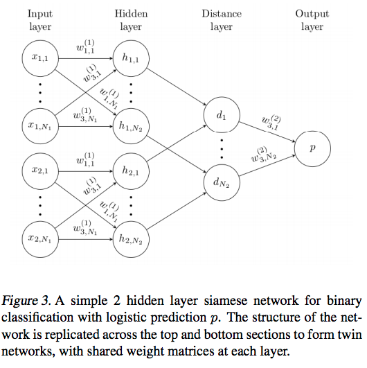

Motivation
目前图像识别任务的准确率依赖于大量的标注数据，但现实中对很多类别要获取足够多的标注数据成本很大，One-shot learning 是李飞飞第一次提出的概念，任务是要求模型准确识别出新类，这些新类在训练时只有一个标注样本。使用场景是：（1）训练时有模型从来没有见过新类，这些新类只有一个的标注样本；（2）不需要重新用原来的数据从头训练已经训练好的模型。
One-shot learning 不希望得到只对目标任务识别准确率很高的domain-specific特征，因为这样的模型只有在相似的实例上才能表现好，对其他类型的任务没有很好的鲁棒性。论文提出的方法，对输入结构的假设做了限制，使模型根据很少的样本就能很好地泛化，不仅对新数据有较好的识别能力，对未知分布的新类别也有较好的泛化能力。
用siamese neural network的原因是它从非常少的新分布样本中就能学到图像的通用特征，这些通用特征对未知类的分布也同样适用。另外通过用原数据构造样本对，很容易用优化算法训练。
Approach
整体思路是先用siamese neural network通过有监督的基于metric的学习方法得到图像的特征表达，然后用得到的特征做one-shot learning，这个过程中不需要任何重新训练。
对输入的一对图片，verification model 通过计算他们属于同一类还是不同类的概率来学习识别图片。
Siamese neural network
Siamese neural network 由两个完全相同的网络组成，两个网络接收不同的输入，分别输出高层的特征表达，最后用一个energy function以某种方法计算两个特征之间的metric来进行结合。如果输入网络的是两张非常相似的图片，因为两个网络的参数相同保证了他们在输出的特征空间的距离不可能非常大。

论文用的 energy function 没有直接学习similarity metric，而是先计算两个twin特征向量的加权 $L1$ 距离，用sigmoid将 $L1$ 距离映射到0-1区间内，再用cross-entropy训练，即 $p = \sigma(\sum_j\alpha_j|h_{1,L-1}^{(j)}-h_{2,L-1}^{(j)}|)$ , $\alpha_j$ 是模型训练是学习到的辅助参数，用来描述不同距离对结果的影响程度。
损失函数
输入 $x_1^{(i)}$ 和 $x_2^{(i)}$ 同一类时 $y(x_1^{(i)}, x_2^{(i)}) = 1$，不同类时 $y(x_1^{(i)}, x_2^{(i)}) = 0$，损失函数就是二分类的交叉熵 + 与模型复杂程度有关的正则项：
训练细节
- 数据增强用了Affine distortions；
- minibatch 128，学习率、momentum 和正则项权重按层定义，可以是不同的值，训练时每个epoch所有层的学习率decay 0.01；
- 权重用normal distribution初始化，卷积层w初始化分布是均值0，标准差 $10^{-2}$ ，bias 是 均值0.5，标准差 $10^{-2}$ ，FC层的权重初始化设置为更wider的均值0，标准差 $2 \times 10^{-1}$ 。
实验结果
数据集 Omniglot Dataset：不同字母的手写字符，每个字母有15到40个样本：
给定一张测试图片x，判断它属于 ${x_C}_{C=1}^C $ 中的哪一类。用 x 和 ${x_C}_{C=1}^C$ 组织成样本对输入模型，预测结果就是相似度最高的那一类：
和其他方法相比的实验结果：